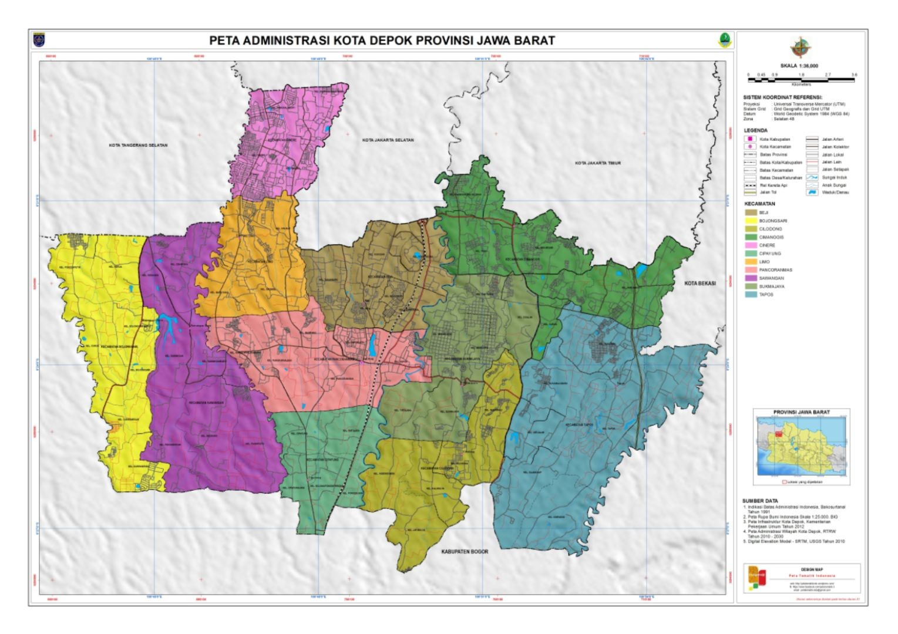
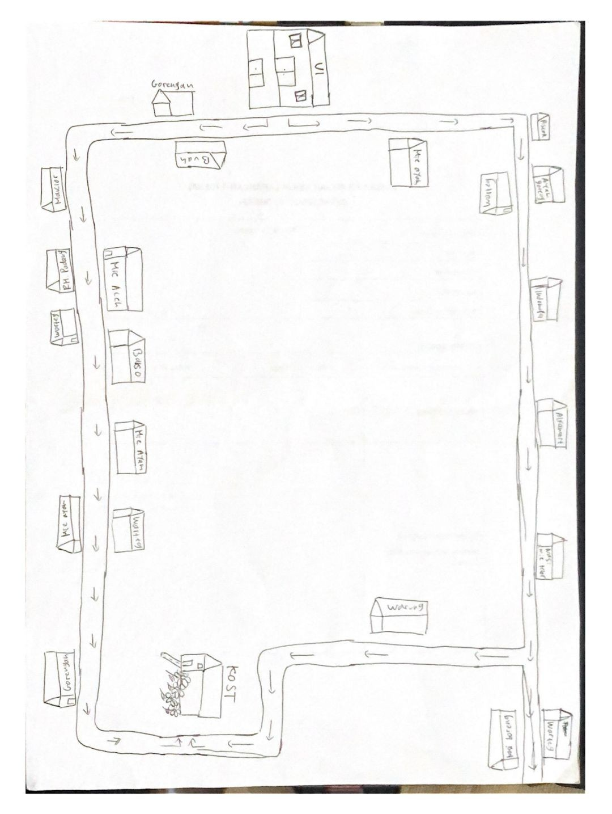
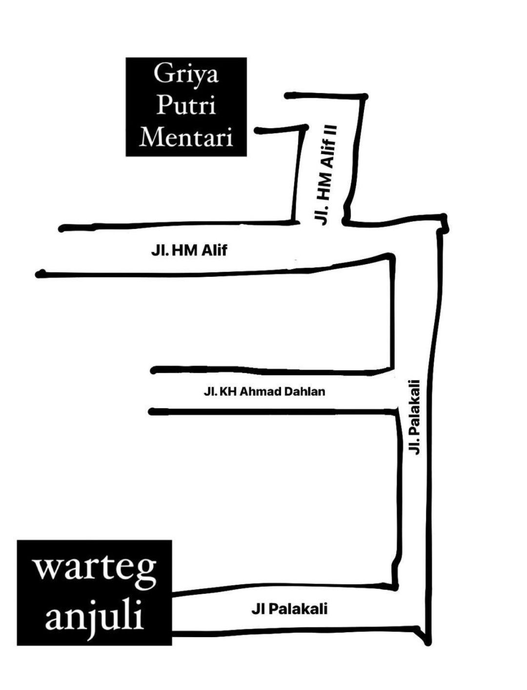
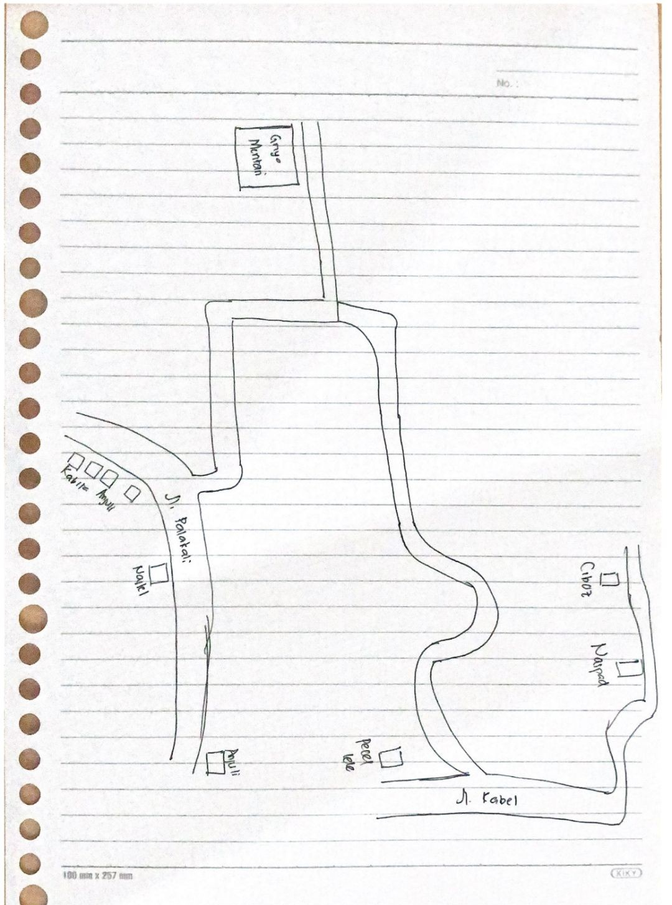
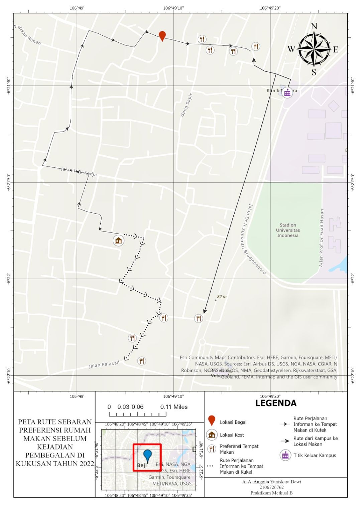
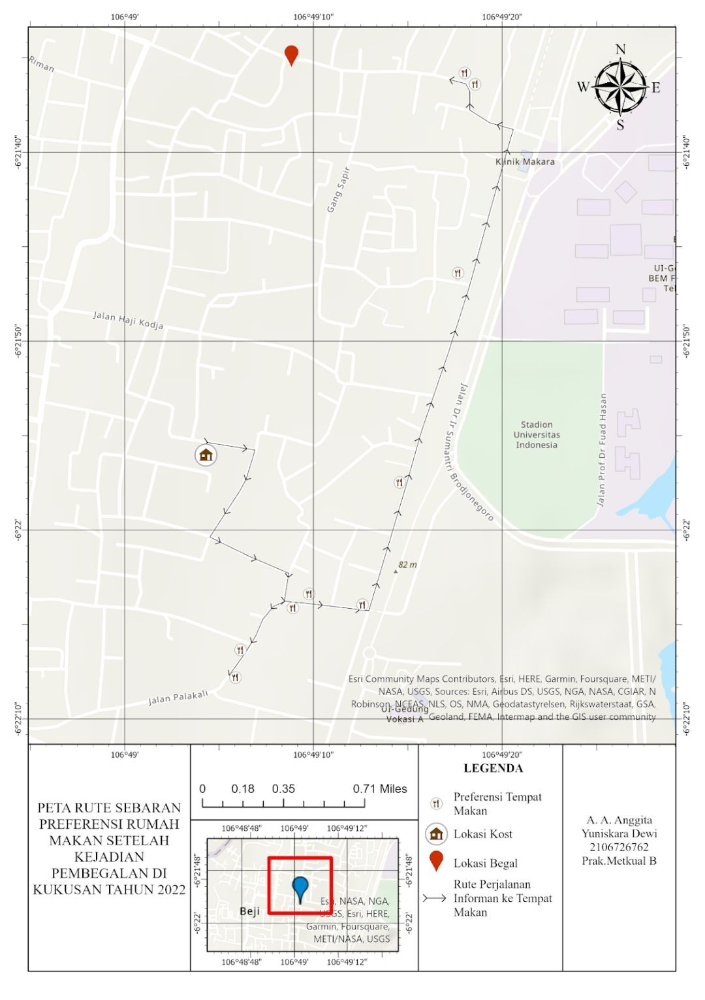

Pola Pemilihan Lokasi Makan Malam Mahasiswa Kost Griya Putri Mentari
Latar belakang
Universitas Indonesia (UI) menarik banyak mahasiswa dari luar Jabodetabek, sehingga kebutuhan tempat tinggal di sekitar kampus ikut meningkat. Kapasitas asrama yang terbatas membuat sebagian besar mahasiswa memilih kost, terutama di Kelurahan Kukusan, Kecamatan Beji, Depok. Kawasan ini dipenuhi kost, penjual makanan, laundry, dan tempat fotokopi karena letaknya yang berbatasan langsung dengan kampus.
Kost Griya Putri Mentari (GPM) yang dibangun pada 2021 punya kekurangan dari sisi akses makan. Kost ini berjarak sekitar 850 meter dari pusat keramaian tempat makan di Kukusan Teknik (Kutek), dan jalan menuju kost sepi serta agak gelap pada malam hari. Situasinya bertambah rumit setelah kasus pembegalan di Jalan Haji Amat, Kukusan Teknik, pada 16 Agustus 2022. Kejadian ini muncul tepat ketika perkuliahan luring baru berjalan kembali, dan lokasinya hanya sekitar satu kilometer dari tempat tinggal para mahasiswa.
Dari sini muncul pertanyaan yang diangkat penelitian ini, yakni bagaimana pola pemilihan lokasi makan malam mahasiswa Kost GPM, faktor apa yang memengaruhinya, dan bagaimana pola tersebut berubah setelah kejadian pembegalan? Pertanyaan ini dijawab dengan pendekatan kualitatif, melalui wawancara mendalam, observasi, dan peta mental (mental map) yang kemudian dipetakan secara spasial.
Data yang digunakan
Penelitian ini memakai data kualitatif. Data primer diambil langsung dari lapangan, sedangkan data sekunder berfungsi sebagai pelengkap dan pembanding.
| Data | Jenis | Sumber | Peran dalam Analisis |
|---|---|---|---|
| Wawancara mendalam | Primer | 3 informan penghuni Kost GPM | Pola, kriteria, dan adaptasi pemilihan lokasi makan malam |
| Observasi lapangan | Primer | Pengamatan langsung | Tempat belanja, jenis pergerakan, dan durasi berbelanja |
| Peta mental | Primer | Gambar tangan informan | Persepsi informan terhadap objek dan rute di Kukusan |
| Catatan lapangan dan dokumentasi | Primer | Peneliti | Memperkuat dan memverifikasi hasil wawancara |
| Koordinat alamat kost informan | Sekunder | Google Earth Pro | Titik awal pemetaan rute |
| Penelitian terdahulu dan teori | Sekunder | Google Scholar | Triangulasi dengan hasil lapangan |
Metode
Wilayah dan informan
Wilayah penelitian adalah Kost GPM di Kukusan Kelurahan (Kukel), Beji, beserta area sekitarnya sampai Kukusan Teknik (Kutek), karena pergerakan mencari makan tidak berhenti di batas kost. Penelitian berlangsung September sampai Desember 2022. Informan dipilih dengan kriteria, di antaranya adalah mahasiswa UI, tinggal di Kost GPM, bersedia diwawancarai, dan mampu memberi jawaban deskriptif yang sesuai topik. Hasilnya tiga informan, yaitu Ratih (GPM_01), Vinka (GPM_02), dan Nabila (GPM_03), yang diwawancarai secara langsung pada 30 September, 30 November, dan 12 Desember 2022.

Alur pengumpulan dan pengolahan data
Wawancara mengikuti pedoman yang terbagi dalam enam blok. Di antaranya adalah perkenalan dan informed consent, informasi demografis, proses memilih kost, kondisi sebelum mendengar kasus begal, pandangan awal terhadap kasus tersebut, serta adaptasi sesudahnya. Seluruh percakapan direkam, ditranskrip, lalu dipadatkan menjadi fakta-fakta ringkas yang diberi kode. Observasi mencatat tiga aspek, yakni tempat belanja, jenis pergerakan (single purpose atau multi purpose trip), dan durasi berbelanja. Setiap informan juga menggambar peta mental kawasan Kukusan berdasarkan pengetahuannya sendiri.
| Kode | Kelompok | Isi Kode |
|---|---|---|
| A | Informasi demografis | Nama, usia, asal daerah, fakultas, semester, lama tinggal, tempat tinggal sebelumnya |
| B (B1–B4) | Proses memilih kost | Pilihan kost, pihak yang menyarankan, alasan ngekost, alasan memilih Kukel |
| C (C1–C14) | Kondisi sebelum kasus begal | Cara dan jam makan malam, lokasi, kriteria, rute, jenis makanan, transportasi, teman, durasi, biaya, karakteristik lokasi, suasana, pelayanan, sumber informasi |
| D (D1–D5) | Pandangan terhadap kasus begal | Perasaan, sumber informasi, waktu dan tempat mendengar, rute alternatif, lokasi alternatif |
| E (E1–E3) | Adaptasi setelah kasus begal | Waktu beli, cara mendapatkan makan malam, kriteria lokasi |
Contoh penerapannya pada transkrip informan 1 (Ratih):
| Kutipan Wawancara | Kode | Pemadatan Fakta |
|---|---|---|
| “...Biasanya itu aku ke arah kukel. Jadi dari kosan aku entar lewat Taman Kukusan, terus ... belok ke kanan ke arah Apartemen Dave...” | C5 | Informan melewati Taman Kukusan, kelurahan Kukusan, lalu Apartemen Dave menuju tempat makan |
Analisis dan triangulasi
Data dikelompokkan ke dalam tiga tema besar. Di antaranya adalah pengalaman makan di Kukusan, kriteria pemilihan rumah makan, dan proses adaptasi setelah kasus pembegalan. Validitas temuan diuji lewat triangulasi, yaitu membandingkan hasil wawancara, observasi, peta mental, dan dokumentasi dengan teori serta penelitian terdahulu. Teori yang dipakai antara lain faktor perilaku konsumen (Kotler dan Keller), pengaruh jarak terhadap pemilihan lokasi (Monroe dan Gultinan), serta tipe pergerakan berbelanja (Hartshorn). Titik-titik lokasi makan dan rute informan dipetakan dengan perangkat SIG, lalu pola sebarannya dibaca sebelum dan sesudah kasus begal.
Hasil
Karakteristik pilihan makan malam
Ketiga informan sama-sama lebih sering membeli makan di luar daripada memasak, dengan tujuan di sekitar Kukel dan Kutek. Detailnya berbeda-beda, seperti terlihat pada tabel berikut.
| Aspek | Ratih (GPM_01) | Vinka (GPM_02) | Nabila (GPM_03) |
|---|---|---|---|
| Jam keluar malam | Sekitar 19.30–20.00 | Sekitar 21.00 | Sekitar 19.00–20.00 |
| Lokasi utama | Nasi goreng Kabita dan sekitar Kukel; Kutek bila pulang kampus | Bahari dan warteg Anjuli | Warteg Anjuli, nasi goreng Kabita, nasi padang Kutek |
| Biaya sekali makan | Rp20.000–25.000 | Rp10.000–15.000 | Di bawah Rp15.000 |
| Durasi | 10–15 menit (bungkus) atau 30–45 menit (makan di tempat) | Sekitar 15 menit | Sekitar 10 menit (lebih sering bungkus) |
| Transportasi | Motor | Motor dan jalan kaki (diboncengkan teman) | Jalan kaki atau menumpang teman |
| Kriteria utama | Searah jalan pulang, bersih, tidak terlalu ramai | Murah, gratis minum, bersih, dekat minimarket | Dekat kost, bisa bayar QRIS, sudah sering dikunjungi |
Menurut observasi, ketiganya cenderung melakukan multi purpose trip bersama teman satu kost. Nabila sesekali melakukan single purpose trip ketika pulang dari kampus. Faktor yang memengaruhi pilihan mencakup harga, kebersihan, kedekatan dengan kost, jenis lauk, rute, dan fasilitas seperti gratis minum. Sumber informasi tempat makan umumnya teman atau hasil survei sendiri, dan jarang media sosial.
Persepsi informan terhadap ruang melalui mental map
Mental Map ketiga informan didominasi bangunan warung dan toko di sepanjang jalan arteri, yaitu Jalan Palakali dan Jalan Kabel yang menghubungkan Kukusan dengan kampus. Jalan-jalan kecil nyaris tidak digambar, sehingga terjadi distorsi. Informan mengingat ruang berdasarkan rute yang sering ia lalui, bukan bentuk sebenarnya. Tingkat kerincian gambar juga berbeda antarinforman, sesuai tingkat keakraban dan pengalaman masing-masing dengan lingkungannya.



Pola spasial sebelum kejadian pembegalan
Saat titik-titik lokasi makan yang disebut informan dipetakan, terbentuk pola mengelompok (nucleated). Pilihan mereka berbeda-beda, tetapi jaraknya berdekatan, terkonsentrasi di Kukel dan sekitar Kutek.

Respons terhadap kejadian pembegalan
Seluruh informan merasa takut, panik, atau was-was setelah mendengar kabar begal, yang mereka terima dari grup angkatan atau fakultas, Twitter, akun UI, dan berita. Jalan menuju kost yang sepi dan gelap pada malam hari memperkuat rasa tidak aman itu.
“...Kebetulan emang jalan menuju kosan aku tu sepi gitu kalo malem, agak gelap gitu kan. Nah itu emang takut sih...” Ratih, penghuni Kost GPM
Adaptasi
Setiap informan beradaptasi dengan cara berbeda. Perubahan ini terjadi pada tiga aspek, yakni waktu membeli makan, lokasi, dan rute.
| Informan | Waktu | Lokasi | Rute |
|---|---|---|---|
| Ratih (GPM_01) | Membeli sekalian pulang kampus saat masih sore; jarang keluar larut | Dari Kukel dan sesekali Kutek menjadi hanya Kukel | Lewat jalan pintas yang masih banyak kost, dan sering ditemani teman |
| Vinka (GPM_02) | Tidak membeli bila sudah sangat malam | Pindah ke tempat dekat kost, seperti Nastel dan Bahari di dekat kost | Rute pendek keluar kost, lalu menyeberang jalan raya |
| Nabila (GPM_03) | Dipersempit ke pukul 19.00–20.00 dan menghindari lewat pukul 21.00 | Tetap, tetapi memilih tempat terdekat bila terpaksa keluar larut | Tidak berubah, mengikuti jalan pulang dari kampus |
“...Oke untuk berubah sih nggak ya karena aku paling ngerubah waktu aku beli makan aja sih...” Nabila, penghuni Kost GPM

Perubahan itu menggeser pola spasialnya. Setelah kasus begal, pilihan lokasi lebih tersebar karena setiap informan mengejar kombinasi dekat, ramai, dan aman yang berbeda, sehingga pola cenderung acak (random).
Kesimpulan
Sebelum kejadian pembegalan, lokasi makan malam mahasiswa Kost GPM membentuk pola mengelompok (nucleated) di Kukel dan sekitar Kutek. Pola itu dipengaruhi oleh jarak tempuh, harga, kebersihan, jenis makanan, fasilitas, dan rute yang dilalui. Pergerakan yang dominan adalah multi purpose trip bersama teman satu kost, karena jaraknya cukup jauh untuk ditempuh sendirian dan terasa kurang aman pada malam hari.
Kejadian pembegalan di Jalan Haji Amat pada 16 Agustus 2022 menambah satu faktor baru dalam keputusan mereka, yaitu rasa aman. Informan beradaptasi dengan mengubah waktu membeli makan, memilih lokasi yang lebih dekat dan lebih ramai, atau mengganti rute. Akibatnya, pola ruang yang tadinya mengelompok bergeser menjadi acak (random).
Temuan ini menunjukkan bahwa kejadian kriminal dapat mengubah perilaku keruangan penghuni kost secara nyata, sampai ke keputusan sederhana seperti memilih tempat makan malam. Bagi pengelola kost dan pihak kampus, hasil ini menandakan pentingnya penerangan jalan, jalur yang aman, dan akses makanan di sekitar kost.
← View other projects